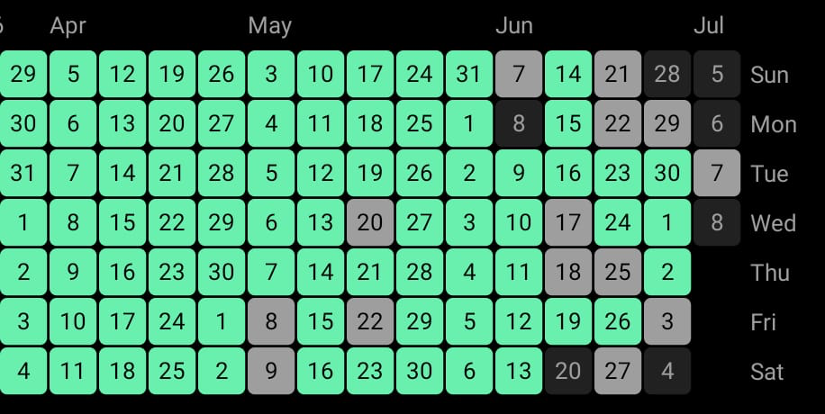

Habit is All

when i first step inside self-help genre of books in 2019, one book i commonly see is "Atomic Habits" then i bought it after seeing rating, sales and author popularity. actually i read whole book from start to finish but i did not understand the what actually habit is, i know and understand what habit is but i lack the essence of habit i mean like what habit in vast term is and how everything is just habit either positive or negative. in result i didn't take any action and it just disappear now it's 2026.
when i see my goals i wanted to achieve in my twenties i literally see no progress towards that direction. then i feel very stress and then no action then stress and this downward spiral goes in very deep rabbit hole. but i have no solution how , what to change. by reading all stuff from people who achieved as a average person i see as a only one common thing is "HABIT". literally if your goals seems like out of league then you should break down in small habit for long term.
it was last year around last 2025 as i am browsing one bag gear post of
travel, i found one guy
Tynan and this guy was
living literally very interesting life. he had written several books but
his three books i used most in my life through action - Superhuman by
Habit, Superhuman Social Skill, Life Nomadic.
as i am talking
about habit Superhuman by Habit by tynan is very practical book , simple
english and for normal average people. book divided into two section
first how to build habit guide second various example of real-life
habits with pros and cons.
another one who inspired me to build habit is one anonymous guy from Sosuave.net named "Pook" in his article Habit is All . He mostly writes about dating, masculinity and in short "MGTOW".
okay very much on habit theory , what action i actually took and what habit currently i am building or breaking. i am building two habit currently based on my current life needs.
Current Habit & it's Progress :
- Deep Work in Morning - 65 days streak with 0 day miss, started with 30 min deepwork now 40 min easily, currently wake up at 7:40am and from 7:50-8:30am predefined deep work.
- Calisthenics as a Habit [Pushup] - 128 days streak with 1 day miss, started with 5 pushup now i easily do 20 pushup, 20 pushup anytime of day not fixed time i know i have to fix that time part.
what are the future plans in habit building and breaking. i want to succesfully achieve 3-4 hour intense focused deep work session for the defined work. approx 1 hour calisthenics session. sleep 7 hour.
below i will add every month analysis of what, how in nutshell my habit journey or progress .
Resource Mentioned :

as you can see ( from 4-6 july ) i had broke the very first rule of habit building - never skip twice . from today i will take care of that
big change in last month i have intentionally quitted the habit of pushup and made new habit of posting reel on calisthenics habit per day - doing this from june 1

Last Updated : 08 July 2026
Signing Off,
Sameer